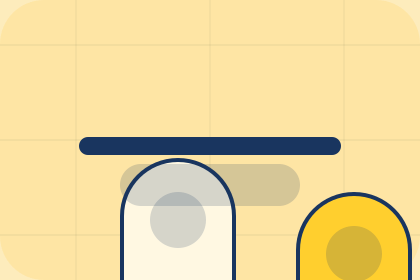

GuideLumaStudio guide
Primary-reference resource rhythm for resources decisions in home.
Open resource
GuidePrimary-reference resource rhythm for resources decisions in home.
Open resourcePrimary-reference resource rhythm for resources decisions in home.
Open resourcePrimary-reference resource rhythm for resources decisions in home.
Open resource